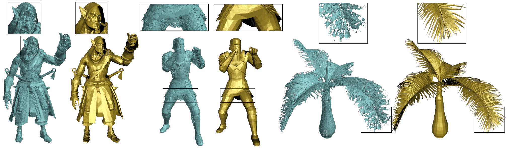
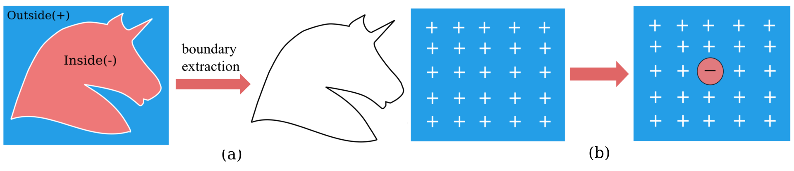

3PSDF: Three-Pole Signed Distance Function for Learning Surfaces with Arbitrary Topologies
IEEE/CVF Computer Vision and Pattern Recognition Conference (CVPR) 2022
| Weikai Chen | Cheng Lin | Weiyang Li | Bo Yang |

Figure 1. We show three groups of shape reconstruction results generated by NDF (in cyan) and our proposed 3PSDF (in gold) respectively. Our method is able to faithfully reconstruct high-fidelity, intricate geometric details including both the closed and open surfaces, while NDF suffers from the meshing problems. Each NDF result is reconstructed from a dense point cloud containing 1 million points while ours are reconstructed using an equivalent resolution.
Abstract
Recent advances in learning 3D shapes using neural implicit functions have achieved impressive results by breaking the previous barrier of resolution and diversity for varying topologies. However, most of such approaches are limited to closed surfaces as they require the space to be divided into inside and outside. More recent works based on unsigned distance function have been proposed to handle complex geometry containing both the open and closed surfaces. Nonetheless, as their direct outputs are point clouds, robustly obtaining high-quality meshing results from discrete points remains an open question. We present a novel learnable implicit representation, called the three-pole signed distance function (3PSDF), that can represent non-watertight 3D shapes with arbitrary topologies while supporting easy field-to-mesh conversion using the classic Marching Cubes algorithm. The key to our method is the introduction of a new sign, the NULL sign, in addition to the conventional in and out labels. The existence of the null sign could stop the formation of a closed isosurface derived from the bisector of the in/out regions. Further, we propose a dedicated learning framework to effectively learn 3PSDF without worrying about the vanishing gradient due to the null labels. Experimental results show that our approach outperforms the previous state-of-the-art methods in a wide range of benchmarks both quantitatively and qualitatively.Key Idea
The "Curse" of Closeness

Conventional signed distance function (a) represents the surface as the bisector between the positive and negative signs. (b) This leads to the "curse" of closeness, that is, the closed surface will always be generated once there exist both signs in the space (even that there is only one point has an opposite sign as shown above).
Our Solution: Introduce the Third (direction-less) Pole -- the NULL Sign
To convert the traditional SDF into mesh, we use the iso-surface extraction techniques, e.g. the Marching Cubes algorithm, to compute the surface position as the the zero-level set by interpolating between the positive and negative values.
To lift the "curse" of closeness, we propose to introduce the third pole, the NULL sign, into SDF. The NULL sign is represented by the nan value. Once a local marching cubes cell contains a nan vertex, the interpolation would fail -- hence, no surfaces can be extracted.
By properly distributing the null signs over the space, we can obtain surface of arbitrary topologies, including both the closed and open ones. Typically, an open surface can be formed with 1) a narrow band surrounding the surface of interest that contains both the positive and negative signs and 2) the remaining space that is filled with nan values.
Resources
| Paper | |
| Code |
Bibtex
@article{chen_2022_3psdf,
title={3PSDF: Three-Pole Signed Distance Function for Learning Surfaces with Arbitrary Topologies},
author={Chen, Weikai and Lin, Cheng and Li, Weiyang and Yang, Bo},
journal={Proceedings of the IEEE/CVF Conference on Computer Vision and Pattern Recognition},
month={June},
year={2022}
}